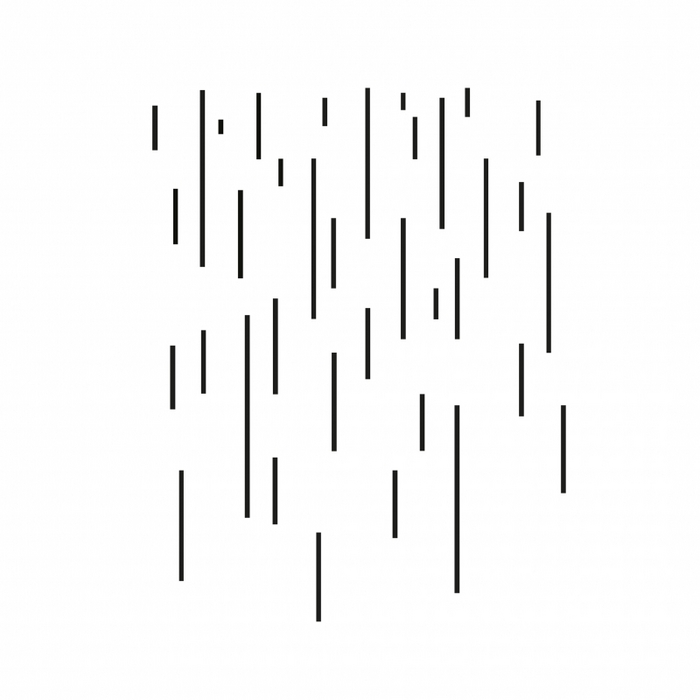

Страх
Никогда и ничего не пугался в своей жизни больше, чем сегодня, когда Тимур решил не ждать нас в магазине, а направился прямиком домой. Искали его 20 минут. И это были самые страшные 20 минут в моей жизни.
Никогда и ничего не пугался в своей жизни больше, чем сегодня, когда Тимур решил не ждать нас в магазине, а направился прямиком домой. Искали его 20 минут. И это были самые страшные 20 минут в моей жизни.
А у Сорвиголовы на айэмдиби рейтинг аж 9.2 и, по-моему, вполне соответствует.

Классные какие англичане!

Очень приятный альбом от автора саундтрека к Бердману (и саундтрек сам кайф). iTMS
Ребята, сходите посмотрите Левиафана. Не качайте торрент, сходите в кино. Я ходил сегодня, билет 320 рублей, в зале 5 человек, можно выбрать любое место. Вместо очередного боевика или глупенькой комедии посмотрите настоящее кино, оно того стоит.